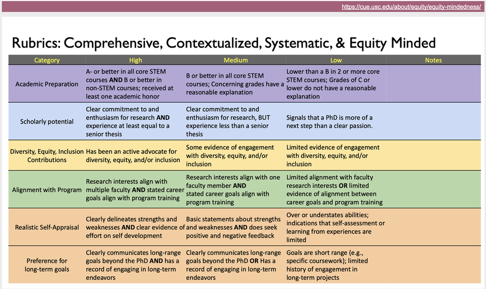

Prospective lab members
We welcome people who are excited about ecological questions, collaborative field research, and learning quantitative approaches. A heavily quantitative background is not a prerequisite.
2027 PhD admissions: We are recruiting one PhD student to lead the Northern California component of our NSF-funded resurvey of historical plant–pollinator communities.
PhD position: Half a century of change in California plant–pollinator communities
We are recruiting a PhD student to join an NSF-funded project asking how plant–pollinator communities have changed over the past 50 years in response to climate and land-use change. The project builds on an extraordinary historical dataset collected by Andrew Moldenke in the late 1960s and early 1970s, documenting hundreds of thousands of plant–insect interactions across California.
By resurveying the same communities, we can ask how plant and pollinator diversity, species interactions, and ecological network structure have changed over half a century—and why some species and interactions have been more vulnerable than others. Read more about the California resurvey project.
Research opportunities and responsibilities
The student will take a leading role in the Northern California component of the project, with field sites spanning the San Francisco Bay Area and the eastern Sierra Nevada. Responsibilities will include:
- Organizing and managing seasonal field teams, including technician training, scheduling, field logistics, and data-quality assurance.
- Traveling throughout Northern California to conduct plant–pollinator surveys across diverse habitats and elevational gradients.
- Collecting data on bee communities, floral resources, phenology, and plant–pollinator interactions.
- Contributing to specimen processing and identification and to the management of large ecological datasets.
- Developing independent dissertation questions related to biodiversity change, species vulnerability, ecological networks, or global change.
The student will also have opportunities to collaborate on papers that integrate the Northern and Southern California datasets. These analyses will let us examine biodiversity and interaction change across broad latitudinal, elevational, climatic, and land-use gradients rather than treating each resurvey region in isolation.
Funding and benefits
The position includes year-round financial support. Summer research support is fully funded through the NSF grant, allowing the student to focus on fieldwork and research during the summer. Field-station housing and a lab vehicle for project fieldwork are also supported by the grant. Academic-year support will come from a combination of teaching assistantships and grant-funded research assistantships.
- 12-month support: UO Biology's most recently published stipend is $32,871.60 for 2024–25; stipend levels are adjusted annually, and compensation will follow the rate in effect at appointment.
- Five years of guaranteed PhD funding, contingent on satisfactory academic progress.
- Tuition waiver and substantially reduced student fees.
- Graduate employee health insurance, including medical coverage; UO currently pays 95% of the premium.
Who we are looking for
We are looking for a curious, motivated student interested in community ecology, pollinator conservation, global change biology, or ecological networks. Strong candidates will have field-ecology experience, good organizational and communication skills, and an interest in quantitative ecology. Experience—or enthusiasm to learn—plant or insect identification, programming, ecological data analysis, and field-team supervision is especially useful.
Because the project involves geographically dispersed sites and substantial summer fieldwork, applicants should be comfortable with extended field trips, variable field conditions, and coordinating teams in remote locations.
Research environment
The Ponisio Lab studies how global change affects biodiversity and species interactions, and how that knowledge can improve conservation and restoration. The student will receive mentorship in research design, quantitative analysis, scientific writing, field-team leadership, and professional development, while working with collaborators across the broader California resurvey project.
To apply
Email Lauren Ponisio with a brief description of your research interests and relevant experience and attach your CV. Please use the subject line “Northern California Pollinator PhD Position.”
Prospective graduate students
For 2027, the open PhD position above is our primary graduate recruitment opportunity. We are not accepting ENVS master's students without external funding because UO cannot guarantee two years of funding for master's students.
When contacting the lab about future graduate opportunities, please send Lauren a CV describing prior research roles, awards, presentations, and publications, along with a short description of your research interests and how they fit with the lab.
We evaluate applicants holistically, including research fit, academic preparation, scholarly potential, prior experiences, and contributions to a supportive and inclusive scientific community.
Prospective postdocs
Potential postdocs are encouraged to contact Lauren early enough to develop a project and fellowship plan together. Fellowship-supported projects can often be shaped around shared interests in pollinator ecology, ecological networks, conservation, restoration, and quantitative methods.
Visiting scholars
The lab has hosted international students and scholars and welcomes inquiries from researchers interested in developing fellowship-supported visits, including Fulbright and comparable international programs.
Lab philosophy & expectations
The lab adaptively updates its mission, advice, and expectations in a public GitHub repository. Prospective members are encouraged to read these materials to get a sense of how we approach mentoring, collaboration, authorship, and day-to-day lab culture.
Holistic evaluation resource
